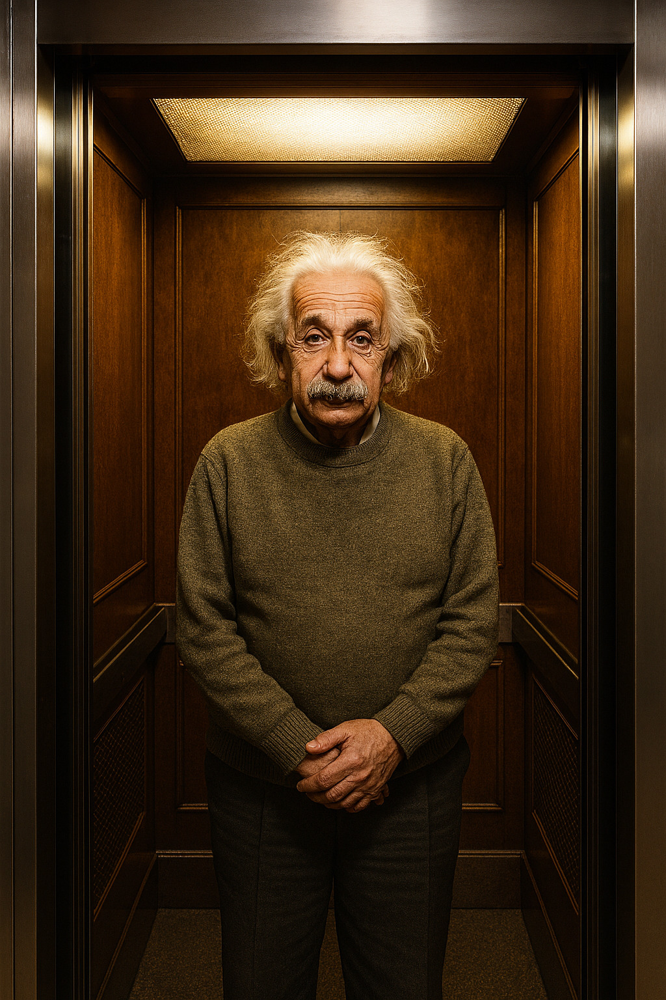

Experimento mental del ascensor o principio de equivalencia
Imagina que estás dentro de un ascensor completamente cerrado, sin ventanas. De repente, sientes que tu cuerpo es empujado contra el suelo. Desde el interior del ascensor no tienes forma de saber si esa fuerza se debe a que el ascensor está quieto sobre la superficie de la Tierra, bajo la influencia de la gravedad, o si en realidad se encuentra en el espacio, acelerando hacia arriba a velocidad constante. Para ti, ambas situaciones son indistinguibles. Einstein usó este experimento mental para mostrar que la gravedad y la aceleración son, localmente, equivalentes. Del mismo modo, si el ascensor estuviera cayendo libremente, los objetos a tu alrededor parecerían flotar, como si no hubiera gravedad, aunque en realidad seguiría actuando. Esta idea llevó al principio de equivalencia, una de las bases de la relatividad general, según el cual la gravedad no es una fuerza convencional, sino una manifestación de la curvatura del espacio-tiempo.
¿Cómo pensó esto Einstein?
Einstein estaba trabajando en la Oficina de Patentes de Berna, tuvo lo que llamó “el pensamiento más feliz de mi vida”. Se dio cuenta de que una persona que cae no siente su propio peso. Si caes junto con un objeto, el objeto parece flotar a tu lado. En ese instante, la gravedad “desaparece” desde tu punto de vista. A partir de ahí, su mente hizo lo que mejor sabía hacer: Se puso en el lugar del observador Einstein siempre preguntaba: ¿qué ve y qué siente alguien dentro del sistema? No miraba el ascensor desde fuera como Newton, sino desde dentro, como si él estuviera ahí atrapado. Eliminó todo lo que no era esencial Cerró el ascensor, quitó ventanas, referencias externas, ruido. Solo dejó lo mínimo: una persona, objetos y sensaciones físicas. Así podía preguntarse: ¿hay alguna forma de distinguir gravedad de aceleración? Confió en la simetría de la naturaleza Si dos situaciones producen exactamente las mismas observaciones, entonces —pensó— la física debería tratarlas como la misma cosa. Esa intuición fue radical para la época. Se atrevió a cuestionar algo “obvio” Desde Newton, la gravedad era una fuerza clara y establecida. Einstein se permitió pensar: ¿y si la gravedad no es realmente una fuerza? Esa pregunta era casi herética… y justo por eso fue revolucionaria. En resumen: Einstein pudo pensar esto porque se permitió jugar seriamente, imaginar situaciones extremas, ponerse dentro de ellas y no aceptar ninguna idea solo porque fuera tradicional. No fue magia: fue curiosidad llevada al límite.